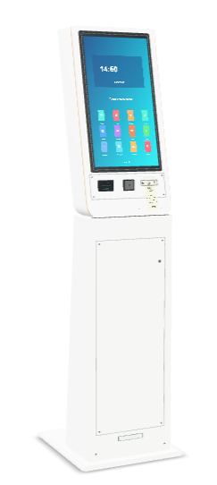
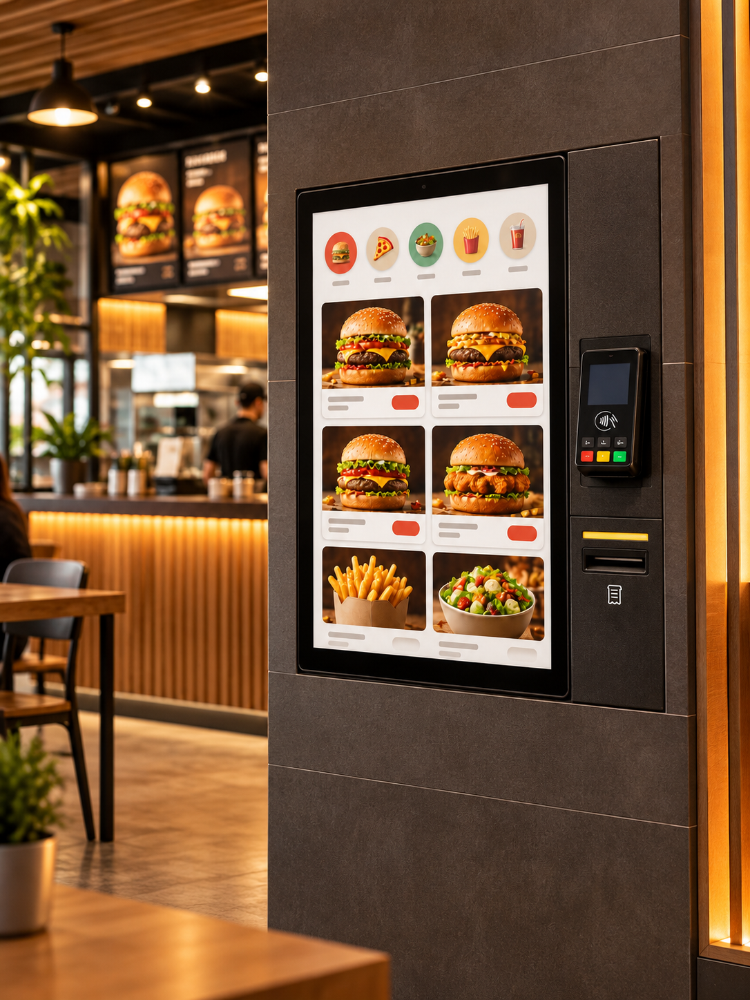

TL / 01Base integrada

Totem Slim
Linhas contínuas, tela inclinada e um corpo que faz parte do ambiente. Para quem busca uma presença discreta e contemporânea.
Estrutura de pisoTela verticalCores personalizáveis
Projeto sob consulta
Do primeiro toque ao pedido pronto. Totens, software e personalização para criar uma experiência que combina com o seu espaço.
Escolha o ponto de partida. Depois, ajuste o acabamento, a cor e os serviços ao seu projeto.

Linhas contínuas, tela inclinada e um corpo que faz parte do ambiente. Para quem busca uma presença discreta e contemporânea.
Tela em destaque e área dedicada para pagamento e impressão. Explore a estrutura com ou sem o suporte metálico.
Modelos ilustrativos. Medidas, componentes, instalação e acabamento final são definidos na proposta técnica.
Uma estrutura que acompanha a identidade do negócio. Experimente madeira branca ou acrílico e encontre a cor da sua marca.
Explorar os acabamentos ↗Catálogo, adicionais e fechamento do pedido na tela. Experimente o percurso completo e veja o comprovante sair do totem.
Testar a experiência ↗Conexões, ventilação, acesso técnico e espaço para os componentes. Explore a construção em 3D, inclusive em uma vista de camadas.
Conhecer por dentro ↗Seu totem começa aqui. Experimente a aparência, explore por dentro e faça um pedido na própria tela.
Abra o configurador para girar, personalizar e testar seu totem em tempo real.
Combine o totem com os serviços que o seu negócio precisa. O escopo de cada solução é definido com você.
Planejar minha solução ↗Seleção de material, cores e aplicação da identidade visual. A estrutura acompanha a proposta do seu ambiente.
Planejamento de catálogo, adicionais e jornada de pedidos. Experimente um exemplo funcional no nosso simulador.
Avaliação de conexão com pagamentos, impressão e sistemas de gestão. Compatibilidade e requisitos são analisados por projeto.
Inclua instalação, orientação de uso e manutenção no seu briefing. Cobertura, prazos e condições ficam definidos na proposta.
Explore os modelos e descubra o formato para o seu espaço.
Teste o visual e a experiência de autoatendimento em 3D.
Monte o briefing com quantidade, serviços e necessidades.
Valide as especificações, o investimento e a implantação.
Reúna as escolhas do seu projeto em um resumo pronto para compartilhar e solicitar uma proposta.
Madeira branca · base integrada
Ajustar no configurador ↗Valores sob consulta, conforme configuração e escopo. Nenhum pagamento é realizado neste site.

Visualização conceitual. Use uma foto do seu estabelecimento para explorar sua configuração.
Você pode experimentar os modelos, materiais e cores no configurador. Logotipo, layout da tela e outros detalhes podem ser incluídos no briefing para avaliação do projeto.
Equipamento, componentes, software e serviços são definidos na proposta. O configurador apresenta possibilidades de visualização; ele não confirma disponibilidade, compatibilidade ou um pacote comercial fechado.
No configurador, escolha “Simular pedido”, selecione os produtos e conclua o pagamento demonstrativo. O totem imprime virtualmente um comprovante com os itens. Não há cobrança nem emissão de documento fiscal real.
Sim. Use “Ver no meu espaço” no configurador. Em dispositivos compatíveis, a realidade aumentada posiciona o modelo no ambiente. Você também pode usar a câmera ou uma foto para uma composição manual. As medidas são ilustrativas.
Inclua o nome do seu sistema e o fluxo desejado no resumo do projeto. A integração depende dos recursos disponíveis, do hardware e da análise técnica.
Prepare o resumo com a configuração, quantidade e serviços desejados. Preço, prazo de produção, entrega e suporte serão definidos na proposta comercial. O contato comercial será adicionado em breve.